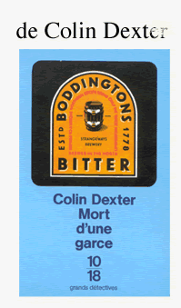
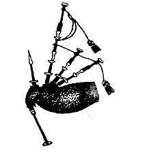

"
Il eut des nausées intermittentes le mardi. Le mercredi, il fut
souvent malade. Le jeudi, il avait eu des nausées, mais ne fut malade
que de temps en temps. Tôt dans la matinée du vendredi - vidé, léthargique,
infiniment las -, il trouva non sans peine la force de se traîner
de son lit jusqu'au téléphone pour s'excuser auprès de ses supérieurs
du poste de police de Kidlington de ce qui avait tout l'air de s'annoncer
comme une absence en ce jour de la fin novembre. |
A son réveil,
le samedi matin, il se rendit compte avec joie qu'il se sentait
considérablement mieux ; de fait, en s'installant à la cuisine de
son appartement de célibataire du nord d'Oxford, dans un pyjama
aussi gaiement rayé qu'un transatlantique du Lido, il se demandait
si son estomac pourrait supporter une gaufrette de Weetabix quand
le téléphone retentit. "... |
| Vous avez jusqu'au 31
décembre à minuit pour tenter votre chance et participer au grand
jeu final des 20 ans de la collection 10/18 "Grands détectives". Tous les mois, vous avez découvert des indices en jouant avec les grands détectives. Ces indices vous permettent de participer au "jeu des empreintes". Pour trouver tous les indices: retrouvez tous les jeux mensuels à partir de l'agenda posé sur le bureau en page d'accueil (entre le journal et la lampe). En cliquant sur chaque mois, vous aurez accès aux journaux et aux jeux mensuels. Pour jouer au jeu des empreintes: un billet d'avion a été déposé sur votre bureau pendant que vous lisiez ce journal... Vous avez maintenant accès au grand jeu final ! Essayez de retrouver le coupable en comparant les empreintes digitales des suspects ! A GAGNER: Partez à la découverte de la patrie d'Eraste Fandorine, héros de Boris Akounine ! Un voyage à Saint-Pétersbourg pour deux personnes. Les 5 autres gagnants recevront une année de lecture de la collection Grands détectives. |
Persuadé
de l'innocence des deux hommes qui ont été pendus pour le meurtre
d'une jeune femme, l'inspecteur Morse va utiliser toutes les ressources
de ses merveilleuses petites cellules grises - et l'aide du sergent
Lewis - pour étayer sa conviction. "Mort d'une garce"
réjouira les amateurs d'énigmes. Ce puzzle extraordinaire, après
avoir plongé le lecteur dans l'univers des romans de Thomas Hardy,
lui fournit le mot de la fin dans une chute brillante. Un livre
à classer au côté de "La fille du temps" de Joséphine
Tey. |
Né à Stamford, diplômé d'Oxford
en 1953, Colin Dexter enseigne le grec et le latin dans les Midlands
pendant treize ans, puis à l'université d'Oxford où il s'établit
définitivement. Au début des années soixante, ce fervent admirateur
de Charles Dickens et surtout de Thomas Hardy voit sa vie basculer
dans l'univers du roman policier, grâce à la lecture d'un "polar"
médiocre qui le convainc de sa capacité à produire une bien meilleure
littérature. Il écrit alors son premier roman, "Le Dernier
Bus pour Woodstock" et signe ainsi l'acte de naissance d'un
nouveau grand détective britannique : l'inspecteur principal Morse
du CID (Criminal Investigation Department). L'inspecteur Morse devient
aussi bientôt la figure culte d'une série télévisée pour des millions
d'Anglais, alors que Colin Dexter est promu mascotte de ce feuilleton,
se prêtant avec amusement à une apparition hitchcockienne dans chacun
des épisodes. |
Fort de ce
succès, Colin Dexter s'est vu également plusieurs fois distingué
par La Crime Writer's Association et a reçu le Gold Dagger Award
(le Poignard d'or) pour "Mort d'une garce", en 1989. Avec
"Remords secrets", Colin Dexter met un point final en
1999 aux enquêtes de l'inspecteur Morse, une série qui compte treize
volumes. |
| - MORT D'UNE GARCE - BIJOUX DE FAMILLE - LE SECRET DE L'ANNEXE 3 - À TRAVERS BOIS - LES FILLES DE CAÏN - LE DERNIER BUS POUR WOODSTOCK - PORTÉE DISPARUE - MORT À JERICHO - LES SILENCES DU PROFESSEUR - SERVICE FUNÈBRE - CASSE TÊTE EN TROIS TEMPS - LA MORT POUR VOISINE - REMORDS SECRETS |
